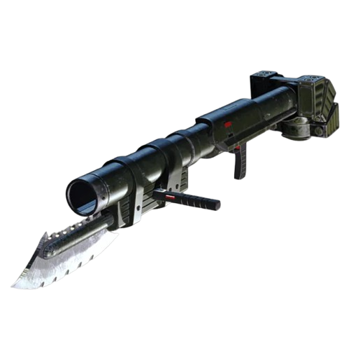

►
Mary
Lady is a human Devil Hunter who first appeared in Devil May Cry 3: Dante's Awakening as both a supporting character and a boss character.
Kalina-Ann
Weapon that is used by Mary
In a quest for revenge, she begins to climb the Temen-ni-gru in pursuit of Arkham. She first meets Dante just after his battle with Cerberus. She fires a missile from Kalina Ann at Dante, who dodges the missile and rides it around the chamber like a flying surfboard. After the missile blows a hole in the wall, Mary uses the new entrance to continue up the tower.
She fights her way up through the tower, taking a different path than Dante. As she approaches the top, she is confronted by Arkham, who calmly asks her why she points a gun at her own kin. She then claims the only family she had was her mother and attempts to shoot him, but Arkham dodges her bullets and flips her off the side of the tower. She fires at him with her handguns as she falls, and one bullet grazes his cheek.
Below, Dante, in devilishly proper timing, catches her by the ankle. She demands that Dante let her go, but Dante jokes that it would be waste if she were to end up as "just a pretty stain". She then shoots Dante in the forehead, and he drops her. By jamming the blade of the Kalina Ann into the wall of the tower, she manages to stop her fall only a short distance away. Dante peers over the ledge to express his outrage at being shot, so she shoots at him again. This time Dante catches the bullet in his teeth but leaves her be. This has her suspect of Dante being a demon.
Still, without a name, she presses on. She does not see Dante again until Leviathan nearly falls on her. Not sure what to make of it, she draws her gun as the eye begins to move. In a fountain of blood, Dante bursts forth from the eye. He starts to walk away, following a sign left by Jester, but she stops him. The two exchange a few words but are attacked by demons. She and Dante stand back-to-back and fight off the demons. During the battle, Dante asks what her name is, to which Mary responds that she doesn't have one and that he can call her whatever he likes. Dante, in a rather dismissive way, replies "Whatever, Lady" before leaping away and leaving the rest of the demons for her to deal with.
When Dante finds the seemingly dead body of Arkham, Mary arrives at the scene. Seeing the body of her despised father, she asks Dante if he is responsible. When Dante replies with an unsatisfactory, "So what if I did?" Mary flies into a rage and shoots at Dante, though he dodges or counters every shot. While venting her anger on Dante, she explains Arkham's sins and that he is her father. She laments about Arkham's death being her responsibility since they are family but ultimately sends Dante on his way. Sometime after Dante's departure, Arkham awakes, though he is still on the verge of death. He tells Mary that it was a demon who tricked him into killing his wife, and pins the blame on Vergil. After saying this, he takes his last breath. Mary then cries over him and promises to avenge his "death" by stopping Vergil.
Mary then catches up to Dante as he is fighting Vergil, and joins the clash. Soon after, Jester stops the battle. Jester reveals that he is, in fact, the alter ego of Arkham. Arkham also reveals that he lured Dante, Vergil, and Mary into that chamber, stating that all of them are the key in his plan to unlock the path to Demon World. In Mary's case, she is the descendant of a human priestess who Sparda sacrificed to seal the Temen-ni-gru. Jester mocks the brothers, saying they are weak. After slamming Mary's face into the floor, he stabs her thigh with the Kalina Ann in order to draw her blood and break the seal. Mary, Vergil, and Dante together try to put an end to Arkham, but, since they are weakened from having fought each other, he easily dispatches them and knocks them off of the rising platform on which they were standing. Mary nearly falls again as the floor beneath her and the sons of Sparda collapses, but Dante catches her. She insists that it is her job to stop Arkham since he is her father, Claiming "a demon like you wouldn't understand" and uses the grappling hook on the Kalina Ann to ascend to the top of the tower. Dante, however, doesn't think she is a match for Arkham and follows her by a different route.
Lady has dark, chin-length hair on both sides of her face and she has a fringe that reaches her eyebrows. She has many scars across her body, the most prominent being the one across her nose. She also always has a necklace with a red gem on it. Like her father, she has the genetic condition called heterochromia, which render each of her eyes a different color: her left eye is red while her right eye is bluish-green.
This page was created for practice and gaining skills(and to get a mark)
Name of creator
Surname of creator
Insta of creator
Tg of creator